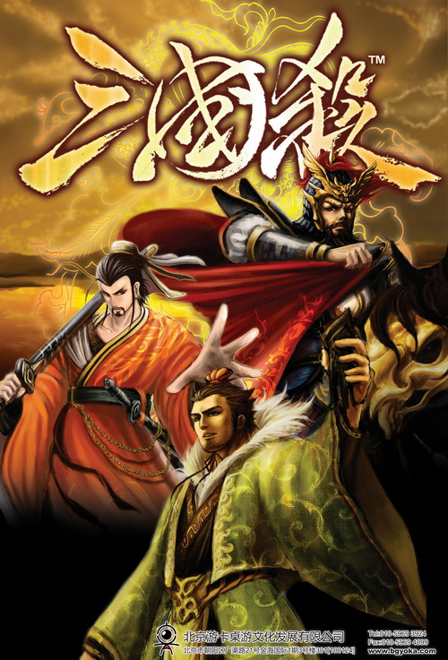
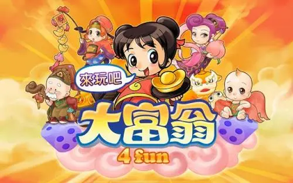
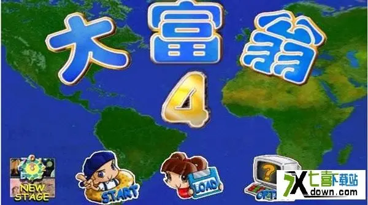
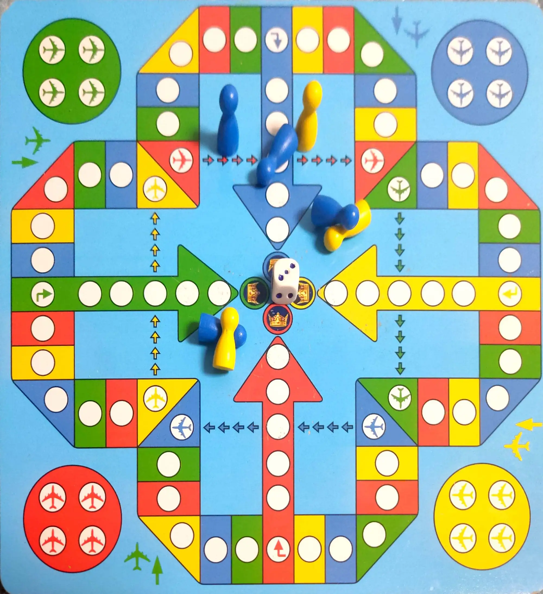

-
《三国杀》是中国传媒大学动画学院2004级游戏专业学生设计，由北京游卡桌游文化发展有限公司出版发行的一款桌上游戏，并在2009年6月底由杭州边锋网络技术有限公司开发出网络游戏。该游戏融合了西方类似游戏的特点，并结合中国三国时期背景，以身份、势力或阵营等为线索，以卡牌为形式，合纵连横，经过一轮一轮的谋略和动作获得最终的胜利。三国杀作为一款原创桌上游戏，有别于其他桌面游戏的最主要特色，就是身份（势力、阵营）系统。 身份场中共有4种身份：主公、反贼、忠臣、内奸。主公和忠臣的任务就是剿灭反贼，清除内奸；反贼的任务则是推翻主公。内奸则要在场上先清除除主公以外的其他人物（包括其他内奸），最后单挑主公。
-
大富翁，又名地产大亨。是一种多人策略图版游戏。参与者分得游戏金钱，凭运气（掷骰子）及交易策略，买地、建楼以赚取租金。英文原名monopoly意为“垄断”，因为最后只得一个胜利者，其余均破产收场。游戏的设计当初旨在暴露放任资本主义的弊端，但是推出之后却受到大众欢迎。 
-
飞行棋是一种竞技游戏，由四种颜色组成的，上面画有飞机的图形，最多可以四个人各拿一种颜色一起玩。飞行棋里有一个骰子，你只要转动骰子，骰子停下来的时候正面是几，你就走几步。 刚开始时只有投到六，你的飞机才能起飞，并且投到六你还有机会再投一次。特别说明的是，到终点时走的步数要正好到达才算胜利，不然要返回来走。关于飞行棋发明的年代和发明人，在网络上似乎还没有相关的线索。比较一致的意见是他至少发明于大约二战以后，因为它是关于飞行的（FLIGHT GAME）。但也有人认为这一点没有说服力，因为它有可能是先有了规则再被冠上了飞行棋的名字，在飞机发明前就出现这一游戏是完全可能的。再说，它可以跟飞机（PLANE）没有直接关系，因为它的名字只是提到飞行（FLIGHT）。